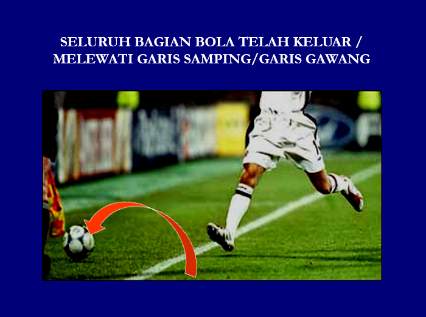

OFISIAL LAIN PERTANDINGAN (THE OTHER OFFICIAL MATCH)
PETUGAS PERTANDINGAN LAINNYA (THE OTHER MATCH OFFICIALS)
ASISTEN WASIT
- Dua Asisten Wasit tugas-tugasnya tergantung keputusan wasit, untuk memberi isyarat :
- Seluruh bagian Bola sudah keluar lapangan permainan
- Pihak yang melakukan tendangan sudut, tendangan gawang atau lemparan kedalam
- Pemain yang dihukum karena ofsaid
- Ada permintaan penggantian pemain
- Ada pelanggaran/insiden lain yang tidak terlihat/dilihat wasit
- Ada pelanggaran yang terjadi didekat nya ( termasuk dalam keadaan tertentu, pelanggaran terjadi dalam daerah pinalti )
- Penjaga gawang bergerak ke depan sebelum bola ditendang pada saat tendangan pinalti dan apabila bola telah melampaui garis gawang.
- Membantu
- Mengawasi / mengamati pertandingan yang sesuai dengan Peraturan Permainan
- Mengawasi / mengamati jarak 9,15 mtr ( apabila diperlukan dapat masuk ke dalam lapangan )
Wasit akan /boleh membebas-tugaskan seorang asisten wasit, bila melakukan campur tangan yang kurang pantas atau prilaku yang tidak tepat / tidak senonoh
PADA PERTANDINGAN KOMPETISI RESMI
Ditetapkan 2 (dua) Asisten Wasit , yang tugasnya tergantung keputusan Wasit untuk mengisyaratkan :
- Bola keluar dari lapangan permainan
- Akan ada penggantian
- Nyatakan Ofsaid
- Tunjuk arah untuk tendangan penjuru, tendangan gawang atau lemparan ke dalam
- Untuk beritahu wasit ada kelakuan tidak sopan / pelanggaran yg tidak dilihat oleh Wasit
CADANGAN ASISTEN WASIT, DAPAT DITUNJUK SESUAI PERATURAN KOMPETISI, UNTUK
- MENGGANTIKAN ASISTEN WASIT YANG TIDAK MAMPU MELANJUTKAN TUGAS
- MENGGANTIKAN OFISIAL KEEMPAT APABILA DIUTUHKAN

ASISTEN WASIT JUGA MEMBANTU, UNTUK :
- Memeriksa lapangan pertandingan, bola yg akan digunakan dan perlengkapan pemain.
- Memutuskan permasalahan yg berhubungan dengan peralatan atau pendarahan telah diselesaikan
- Memonitor proses penggantian pemain
- Buat catatan waktu ketika terjadi Gol, kelakuan tidak sopan
KERJASAMA TIM
ASISTEN WASIT harus selalu berada :
- Pada posisi sejajar dengan pemain bertahan kedua terakhir
- Selalu menghadap ke lapangan permainan
GERAK TUBUH (GESTURES)
- SINYAL DENGAN TANGAN, MEMPUNYAI ARTI YANG JELAS UNTUK MEMBERI DUKUNGAN YANG POSITIP KEPADA WASIT.
- ARTI DARIPADA GERAK TUBUH, HARUS DI DISKUSIKAN DAN DISETUJUI PADA SAAT DISKUSI SEBELUM PERTANDINGAN.
TEKNIK BERLARI
- MELIHAT KE LAPANGAN PERMAINAN
- MELIHAT KE LAPANGAN PERMAINAN

- UNTUK JARAK DEKAT GUNAKAN PERGERAKAN MENYAMPING, DENGAN MAKSUD :
- MENYATAKAN POSISI OFSAID
- MEMBERI SUDUT PANDANG YANG BAGUS
TEKNIK BENDERA ASISTEN WASIT
- BENDERA TERLIHAT OLEH WASIT (TIDAK TERGULUNG) SELAGI BERLARI
- DALAM MEMBERI ISYARAT
- BERHENTI BERLARI
- MELIHAT KELAPANGAN
- KONTAK MATA DENGAN WASIT
- ANGKAT / KIBARKAN BENDERA DENGAN TENANG (TIDAK BURU-BURU)
- BENDERA HARUS SEPERTI PARPANJANGAN DARI TANGAN
- PEMINDAHAN BENDERA KETANGAN YANG LAIN. DILAKUKAN PADA POSISI DI BAWAH PINGGANG
- BERI SINYAL SAMPAI WASIT MELIHAT , DAN TUNGGU KEPUTUSAN / ISYARAT WASIT
Gunakan Teknik "TUNGGU dan LIHAT" Wait and See Technique
- Pusatkan perhatian pada Posisi Penyerang, kemudian kemudian beri penilaian, apakah ia aktip mencampuri permainan.
- Untuk menilai menghukum apabila ia aktip mencmpuri permainan, perlu memperhatikan dan memperhitungkan pergerakan bola, dengan :
- Arah
- Kecepatan
- Jarak
- Perubahan (pengalihan) arah dan sebagainya.
- Lebih baik sedikit terlambat, tetapi benar, dari pada cepat tetapi salah.
Jika Asisten Wasit tidak yakin sepenuhnya tentang pelanggaran Ofsaid, maka ia tidak perlu mengibarkan bendera.
Perbaiki teknik untuk melihat bola dan orang kedua terakhir, MATA bergerak cepat melihat bola dan pemain.
Amati orang kedua terakhir dari pihak bertahan, dan perhatikan tendangan dan gerakan bola.
Bereaksilah dan beraksilah seperti "Kamera TV".
OFISIAL KEEMPAT
BERTUGAS & BERTANGGUNG-JAWAB, untuk :
- tugas ADMINISTRASI sebelum, selama dan sesudah pertandingan.
- proses PERGANTIAN PEMAIN
- menentukan/mempersiapkan BOLA PENGGANTI berdasarkan instruksi wasit
- memeriksa PERLENGKAPAN PEMAIN pengganti yang akan memasuki lapangan BERITAHU wasit :
- apabila terjadi kekeliruan wasit dalam memberi peringatan / hukuman karena salah identitas pemain, atau tidak mengeluarkan pemain setelah diberi kartu kuning kedua, atau terjadi perlakuan kasar yang tidak dilihat wasit maupun asisten wasit. (kewenangan ada pada wasit)
- tentang PERILAKU tidak bertanggung-jawab dari OFISIAL / PEMAIN di DAERAH TEKNIK.
- MEMBANTU Wasit mengontrol pertandingan sesuai Peraturan
- buat LAPORAN dan menyerahkan kepada pihak berwenang atas insiden lain yang tidak dilihat oleh Wasit maupun Asisten Wasit.
NAMUN WASIT MEMILIKI KEWENANGAN UNTUK SELURUH HAL YANG BERKAITAN DENGAN PERMAINAN
Pertemuan menjelang pertandingan Periksa Daftar
Berikut pokok bahasan diskusi pada dengan asisten wasit dan cadangan wasit :
- Kontak mata
- Konsultasi
- Kesalahan tindakan disisplin yang dilakukan oleh Wasit.
- Penggunaan isyarat (signal beep)
- Periksa jaring gawang sebelum tiap babak dimulai
- Pelanggaran di daerah Asisten Wasit
- Situasi Pinalti dekat dengan Asisten Wasit.
- Situasi dekat dengan batas daerah pinalti : di dalam / di luar.
- Ketika Tendangan Pinalti : Mengawasi Penjaga Gawang.
- Pelanggaran yang tidak terlihat oleh Wasit ; Menyikut.
- Kelakuan yang tidak sopan / Berkelakuan Jahat / Kasar yang tidak terlihat oleh Wasit.
- Konfrontasi Massa.
Kerjasama
- Situasi Gol - Keputusan yang ketat ( Serius ).
- Tendangan Sudut : dekat Asisten Wasit - jauh dari Asisten Wasit.
- Lemparan ke Dalam : dekat Asisten Wasit - jauh dari Asisten Wasit.
- Tendangan Gawang : dekat Asisten Wasit - jauh dari Asisten Wasit.
- Penjaga Gawang melepaskan bola dekat dengan batas daerah pinalti.
- Teknik Tunggu dan Lihat ketika situasi Ofsaid
- Teknik Tunggu dan Lihat dalam pelanggaran dekat asisten wasit
- Isyarat yang terlewat/luput ketika situasi ofsaid
- Isyarat yang terlewat/luput ketika pelanggaran dan perlakuan tidak sopan
Cadangan Wasit
- Bangku tempat Ofisial dan Pemain (Daerah Teknik)
- Penggantian
- Pemeriksaan perlengkapan pemain
- Perhiasan
- Cadangan Kartu dan Peluit (semprit)
- Lamanya Pertandingan ; Penambahan Waktu.